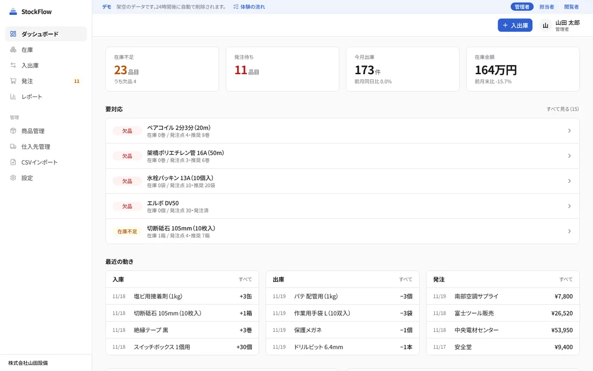
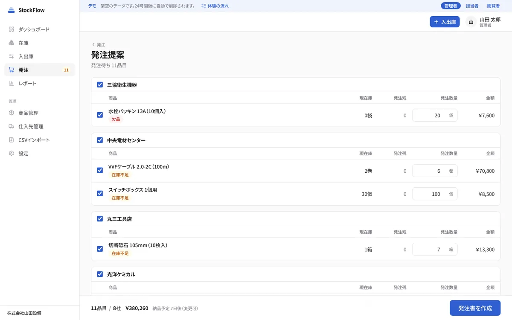
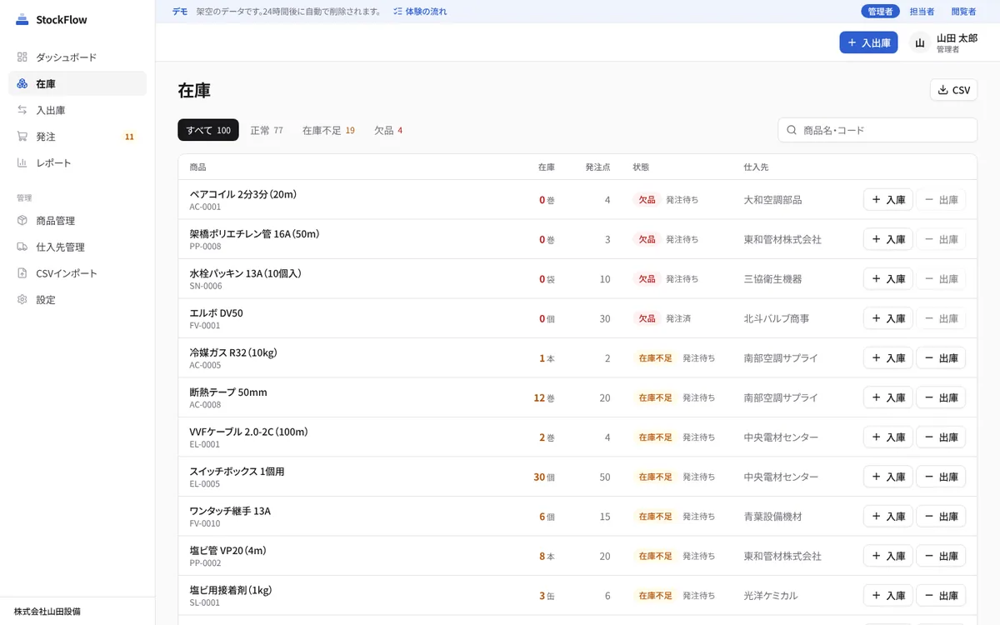
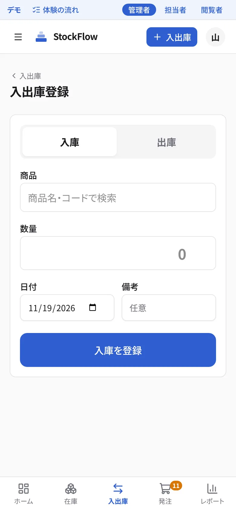
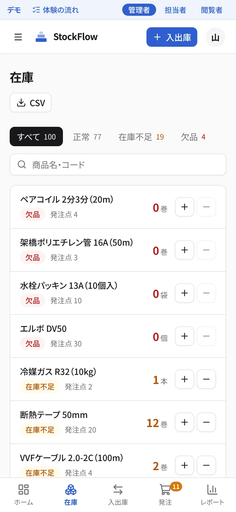
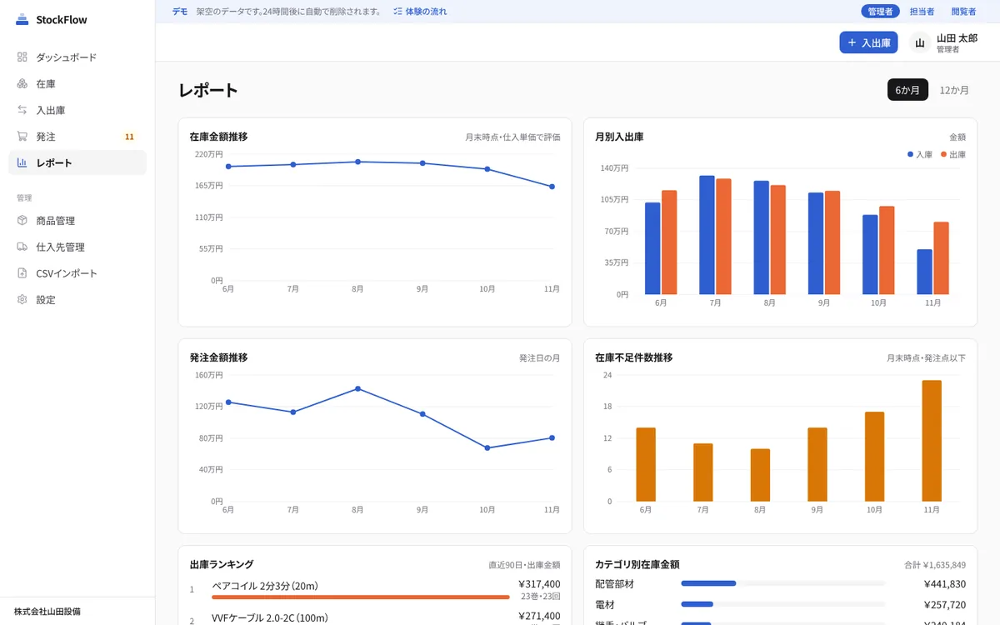
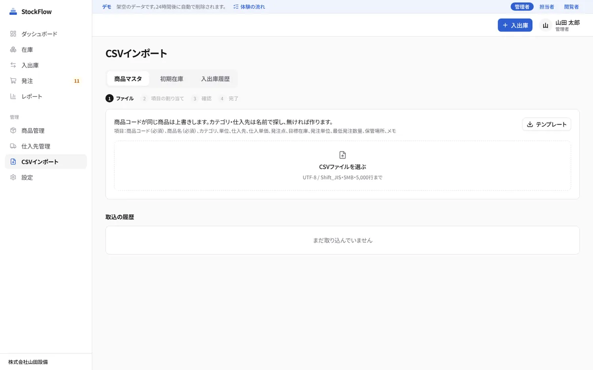

StockFlow
「何を・いくつ・どこに発注するか」を記録から自動で出し、欠品と発注漏れを防ぐ在庫・発注管理システムです。
- Client
- 部材・消耗品を仕入れて使う中小企業（設備工事・建築・修理業・小売など）
- Users
- 管理者・担当者・閲覧者
（PC・スマートフォン） - Demo
- 登録不要。訪問者ごとに
専用のデモ会社を作成

Overview
プロジェクト概要
入庫・出庫の記録から在庫を計算し、発注が必要な商品と発注数を提案、仕入先別の発注書（PDF）の作成から入荷の登録までを1つの画面で行える、中小企業向けの在庫・発注管理システムです。
在庫の数字は記録の合計で、記録は書き換えずに「取消」や「棚卸の調整」を追加して訂正します。だれが・いつ・何を動かしたかが必ず残るため、Excel と現物が合わない原因を後から追えるように設計しています。
Problem
想定した業務課題
- 在庫数が Excel と現物で合わず、どこでずれたのか分からない
- 欠品してから発注漏れに気づき、現場の作業が止まる
- 発注数は担当者の経験と記憶まかせで、人によって判断が違う
- 発注書を仕入先ごとに Word で手作りし、FAX やメールで送っている
- どれが届いて、どれが未着なのか、納品書を見ないと分からない
Solution
解決方法
- 在庫は入出庫の記録から計算し、訂正も履歴として追加します。在庫を超える出庫は、同時に操作しても登録できません。
- 在庫が発注点以下になった商品を自動で見つけ、ダッシュボードの「要対応」に欠品 → 在庫不足 → 発注待ち → 入荷遅延の順で表示します。
- 推奨発注数を「目標在庫 − 現在庫 − 未入荷の発注残」から計算し、最低発注数量と発注単位に合わせて切り上げます。
- 提案から商品を選ぶだけで、仕入先ごとに発注書を自動で分け、会社情報を入れた PDF を出力します。
- 入荷は発注に対して登録し、分納にも対応します。登録すると在庫に反映され、発注数を超える入荷や二重登録は防ぎます。
Impact
導入効果の試算
商品約100品目・仕入先約15社・担当者2名の会社を想定（アプリの紹介ページの試算と同じ条件で、合計は月20時間 → 月6時間）。人件費の時間単価 2,500円（在庫・発注の担当者）は、このページで置いた想定です。
- 削減できる作業時間
- 月 14時間月 20時間 → 月 6時間
- 年間の削減時間
- 168時間月 14時間 × 12か月
- 人件費に換算すると
- 約42万円 / 年月 約3.5万円（時間単価 2,500円）
| 作業（1か月あたり） | 導入前 | 導入後 | 削減 |
|---|---|---|---|
| 在庫の確認・集計倉庫を見て回り Excel に転記 → 入出庫の記録から計算された在庫と状態を一覧で確認 | 8時間 | 2時間 | −6時間 |
| 発注数の判断・発注書の作成経験と記憶で判断し、仕入先ごとに Word で作成 → 推奨数を確認して、仕入先別の PDF をまとめて出力 | 6時間 | 1.5時間 | −4.5時間 |
| 入荷の確認・在庫表への転記納品書を見て手で在庫を足す → 発注に対して入荷を登録（分納にも対応） | 4時間 | 1.5時間 | −2.5時間 |
| 欠品・問い合わせの確認在庫があるかを毎回確認しに行く → ダッシュボードの「要対応」とスマホの在庫検索で確認 | 2時間 | 1時間 | −1時間 |
| 合計 | 20時間 | 6時間 | −14時間 |
※ 実際の導入実績ではなく、上の想定条件にもとづく試算です。実際の効果は、業務の内容や運用によって変わります。欠品による機会損失の削減は含めていません。
Features
主要機能
- ダッシュボード
- 在庫不足・発注待ち・今月の出庫・在庫金額と、対応が必要な商品を優先度の高い順に表示。
- 在庫・入出庫
- 検索と状態（正常・在庫不足・欠品）での絞り込み。スマホで片手入力でき、在庫を超える出庫は登録できない。棚卸の調整と取消にも対応。
- 発注提案・発注書
- 推奨数を自動で計算し、仕入先ごとに発注書を分割して PDF を出力。発注済 → 入荷（分納可）まで一続きで管理。
- レポート
- 在庫金額推移・月別入出庫・発注金額推移・在庫不足件数・出庫ランキング・カテゴリ別在庫金額・長期滞留在庫。
- CSV 取込・出力
- 商品マスタ・初期在庫・入出庫履歴を、プレビュー → 項目の割り当て → 確認の手順で取込（Shift_JIS 対応・同じファイルの再取込を防止）。
- 役割と権限
- 管理者・担当者・閲覧者。棚卸の調整・マスタ・設定は管理者だけが操作でき、閲覧者は見るだけ。
Screens
スクリーンショット






Tech
使用技術
- Next.js 16（App Router・Server Actions）
- React 19
- TypeScript
- PostgreSQL 16（Neon）
- Tailwind CSS 4
- Radix UI
- Recharts
- React Hook Form・Zod
- pdf-lib
- Vitest
- Playwright
- Vercel
- 在庫・発注・入荷・取込の書き込みはデータベースの関数だけが行います。在庫の判定は在庫の行をロックしたトランザクションの中で行うため、同時に出庫しても在庫がマイナスになりません。
- 登録・発注・入荷には冪等性キーを付け、二度押しや通信の再試行で二重に登録されないようにしています。
- 会社ごとのデータは PostgreSQL の行レベルセキュリティ（RLS）で分け、権限は画面・サーバー・データベースの3段で確認しています。
- 単位の違う数量は合計せず、集計は件数か、仕入単価で計算した金額（参考値）で表しています。
Links
デモ・ソースコード
登録は不要です。紹介ページの「デモを試す」、またはログイン画面で役割（管理者・担当者・閲覧者）を選ぶと、訪問者ごとに専用のデモ会社（架空の会社「株式会社山田設備」の約100品目・半年分のデータ）が作られ、24時間後に自動で削除されます。画面上部の「体験の流れ」から、不足に気づく → 発注提案 → 発注書 → 入荷までを3〜5分で辿れます。